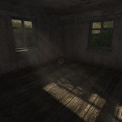
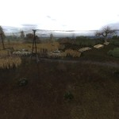

DayZ OGSurv / Old Good Stalker Evolution
Страницы сайта
Главная
DayZ
DayZ FAQ
OGSE
OGSE FAQ
Галерея
Файлы
Галерея скриншотов из игры
ПРОЕКТ ЗАКРЫТ! ПИСАТЬ О НЁМ МНЕ НЕ НУЖНО!


2008-2025
O.G.S.E / DayZ OGSurv
|
Карта сайта